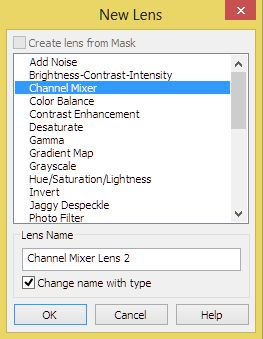
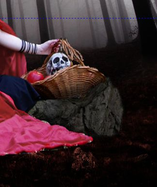
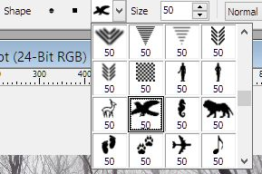

Коллаж на тему «Красная Шапочка»
Давненько я ничего в уроках не выкладывал, но тут мне на просторах Интернета попался не очень сложный коллаж, естественно состряпанный Фотошопом. Но он мне приглянулся и я решил, что это неплохой повод рассказать начинающим пользователям Photo-Paint, как получить такой же результат.
Нам понадобятся исходные фото, которые я добавил в прикрепленных файлах. Чтобы увидеть, что мы должны получить в итоге, можете посмотреть в конце урока.
Начнем мы с подготовки исходного материала.
Шаг 1.
У нас имеется в наличии фото модели, которая будет служить прототипом нашей «Красной Шапочки», хотя выглядит она, как «Злая Красная Шапочка». :-) :-) (рис. 1).

Наша задача – выделить модель и отделить ее от фона. Хотя в таких случаях зачастую целесообразно сначала сделать обрезку, чтобы минимизировать окружающий фон и тем самым уменьшить фронт работ, но мы здесь этого делать не будем.
Как любой ленивый человек, я сначала хотел избавиться от фона, выделив его инструментом Magic Wand Mask (Маска волшебной палочкой). Но не тут-то было… Конечно, можно это сделать и этим инструментом, но придется повозиться с подбором параметра Tolerance (Допуск) и изрядно пощелкать по фону (или модели), чтобы выделить его весь.
Я решил пойти несколько другим путем, а заодно воспользовавшись случаем, разнообразить урок. Я как-то говорил, что мой любимый инструмент выделения – Выделение Кистью. Исходя из своего предпочтения, я и начал работу…
1. Для реализации своего плана, создадим сначала линзу. Для этого в щелкните кнопку New Lens (Создание линзы) (рис. 2). Если у вас докер Objects (Объекты) закрыт, можете вызвать его, нажав Ctrl + F7.
В диалоговом окне New Lens (Создание линзы), выберите линзу Channel Mixer (Смешивание каналов) (рис. 3) и щелкните ОК.

В открывшемся диалоговом окне Channel Mixer (Смешивание каналов) сделайте настройки, как на рис. 4.
Обратите внимание, что в этом типе линзы, в отличие от остальных линз, окно фильтра отличается от аналогичного, вызываемого командой Adjust > Channel Mixer (Настройка > Смешивание каналов). Здесь (в линзе) присутствует группа переключателей Output as (Выводить как). Выбор счетчика Monochrome (Монохромный) позволяет работать с изображением в оттенках серого, что часто используется для создания выделенных областей. Идея этого способа заключается в том, чтобы увеличить контраст в нужных местах изображения, что облегчает создание выделения.
Щелкните в окне фильтра ОК. Photo-Paint создаст линзу и вы можете ее увидеть в докере Objects (Объекты) (рис. 5).
Наше изображение примет вид, как на рис. 6.
Как видите, контраст между фоном и нашей будущей «Красной Шапочкой» увеличился.
2. Теперь воспользуемся одним из свойств линз. Как вы сами видите, Photo-Paint создал маску обрезки, которая выглядит в докере Objects (Объекты) как белый прямоугольник. В том, что это маска обрезки, вы можете убедиться, заглянув в докер Channels (Каналы).
Открепим маску обрезки от объекта-линзы, для чего щелкните в докере Objects (Объекты) на значок «+», между маской обрезки и линзой (рис. 7).
Затем щелкните в докере Objects (Объекты) на «открепленной» маске обрезки (рис. 8). Она будет выглядеть, как белый прямоугольник с тонкой красной рамочкой.
3. Теперь самое время воспользоваться свойством масок обрезки и моим любимым инструментом – Кистью. Переключитесь на инструмент Paint (Кисть), нажав клавишу P. Убедитесь, что в качестве цвета краски выбран черный цвет. А теперь, просто начинайте закрашивать модель. Для этого можно немного увеличить масштаб и выбрать жесткую кисть большого размера, например, 100 px. Photo-Paint довольно сообразительная программа и он будет стараться, чтобы мазки кистью не пересекали границу контрастной области. Но это не означает, что можно закрашивать как угодно, на границе выделяемой области надо проявлять аккуратность. К тому же придется варьировать масштаб изображения и размер кисти, при выделении краев платья и других «граничных» областей. Я для этого использовал круглые кисти размером 50 и 20 px. На рис. 9 показан «ход выполнения закраски».
Если вдруг, вы «закрасили» лишнее, т. е. выделилось больше необходимого, переключите цвет краски на белый и закрасьте лишние области. В итоге у вас должно получиться так, как на рис. 10.
4. Теперь нам надо сделать объект из выделенной области. Для этого перейдите в докер Channels (Каналы) (рис. 11).
В докере Channels (Каналы) щелкните на маске обрезки, как показано на рис. 11. Выполните команду Mask > Create > Channel to Mask (Маска > Создать > Канал в маску). В докере Channels (Каналы) вы увидите только что созданную маску (рис. 12).
Так как у нас в итоге замаскированной частью является фон, а редактируемой – модель, то нам необходимо инвертировать маску. Для этого щелкните на кнопке Invert mask (Инвертировать маску) Стандартной панели инструментов или нажмите Ctrl + Shift + I.
Теперь можно создать объект – Ctrl + Shift + стрелка вверх.
5. Теперь надо избавиться от мелких невыделенных деталей (рис. 13).
В докере Objects (Объекты) выделите вновь созданный объект, щелкнув на нем. Нам нужно выделить эти ненужные области. Для этой цели лучше всего подошел инструмент Magnetic Mask (Магнитная маска). При активном режиме Additive mode (Аддитивный режим) выделите лишние области. Затем вырежьте их, нажав Ctrl + Shift + стрелка вверх и затем клавишу Delete.
Дальнейшие ваши действия зависят от точности выделения. Хотя можно с уверенностью сказать, что скорее всего у вас останутся по краям «обрывки» фона, как на рис. 14.
Избавиться от них можно с помощью команды Object > Matting > Defringe (Объект > Края > Бахрома). В диалоговом окне Defringe (Бахрома) установите нужное значение (рис. 15). У меня получилось значение равное 2.
Чем больше остатков фона, тем большее значение нужно ввести в поле Width (Ширина). Также, у нас будет небольшая «кайма» вокруг всей модели – остатки фона и неровности после выделения. Это легко исправить размыв края объекта. Это придаст краям плавность и небольшое размытие, что пригодится нам в дальнейшем. Для этого выполните команду Object > Feather (Объект > Размыть края). В этом диалоговом окне установите значение в счетчике Width (Ширина) = 3, а в раскрывающемся списке Edges (Края) выберите вариант Curved (Скругленные). Чтобы увидеть, на что влияет команда Feather (Размыть края), сравните рис. 16 (до) и 17 (после) выполнения команды.
Как видите, остатки фона вдоль накидки практически исчезли и стали размытыми.
На этом пока можно закончить предварительную работу с моделью.
И хотя описание действий получилось довольно длинным (к тому же я старался достаточно подробно все описать), но на самом деле вся эта процедура занимает от силы несколько минут.
В конечном итоге мы получим такой объект (рис. 18).
Здесь вы видите только объект-фотомодель, потому что я в докере Objects (Объекты) отключил отображение фона и объекта-линзы.
Шаг 2.
1. Теперь создадим новый документ – Ctrl + N. В окне Create a New Image (Создать Изображение) выставляем настройки, как на рис. 19.
В данном случае можно было создать размер документа и больше (или меньше по высоте), чтобы был запас свободного места для дальнейших манипуляций. Но я остановился на этом варианте. Обратите внимание, что установлен флажок No background (Без фона).
2. Теперь нам необходимо в новый документ вставить изображения. Сначала вставим изображение Леса. В этой ситуации, чтобы изображение сразу вставилось как объект, можно воспользоваться функцией Импорта. Щелкните одноименную кнопку на Стандартной панели инструментов и импортируйте изображение с лесом. Затем выровняйте его по центру и по верхнему краю (рис. 20). Заодно рекомендую в докере Objects (Объекты) присваивать новым объектам имена, чтобы легче было ориентироваться по ходу урока о чем идет речь.
На этом же рисунке видна направляющая, расположенная у подножия деревьев. Я ее установил там для ориентира, который нам понадобится для удобства в дальнейших действиях.
Шаг 3.
1. Теперь вставим изображение Поля. Повторим процедуру Импорта. Изображение с полем вставится, как новый объект.
2. Т. к. изображение Поля больше созданного нами, измените его размеры инструментом Object Pick (Выбор объекта), потянув за угловые маркеры. Уменьшите его, пока размеры по ширине не станут такими же, как наш документ. Затем разместите его, как на рис. 21.
3. Наша теперь задача «объединить» обе картинки, чтобы получить цельное изображение леса, но с новым передним планом. Т. к. объект-Поле у нас находится поверх остальных объектов, то по идее он должен быть у вас выделен. Если нет, то щелкните на нем инструментом Object Pick (Выбор объекта).
Чтобы реализовать нашу задачу, воспользуемся инструментом Object Transparency (Прозрачность объекта). Выберите этот инструмент на панели Toolbox (Набор инструментов) или нажмите горячую клавишу 1 (но не на цифровой клавиатуре). Протащите этим инструментом сверху вниз, как на рис. 22.
На Панели свойств, в счетчике Transparency (Прозрачность) задайте значение прозрачности в начальной точке равным 0 и конечной точке равным 100. Сместите центральную точку прозрачности ближе к начальной точке. У вас может получиться немного не так, как у меня, но действия будут аналогичны.
Теперь сотрем еще часть поля, для чего воспользуемся инструментом Object Transparency Brush (Кисть прозрачности объекта), горячая клавиша – цифра 3. Выберите мягкую кисть размером 100 px и на Панели свойств установите значение Transparency (Прозрачность) равным 100. Обработайте верхнюю часть поля.
Нам необходимо теперь немного изменить цвет, для чего воспользуемся фильтром Hue/Saturation/Lightness (Оттенок/Насыщенность/Яркость) (рис. 23).
У вас значения могут немного отличаться от моих, но вы можете подкорректировать их на свой вкус. В итоге, должно получиться как на рис. 24.
Тут есть один нюанс… Во время окончательной доводки, чтобы получить такой результат, мне пришлось немного подкорректировать положение объекта-Поля, подвинув его немного вверх и еще немного подчистив граничную с лесом область кистью Object Transparency Brush (Кисть прозрачности объекта).
Шаг 4.
Теперь вставим еще один объект – фото с цветами. Импортируйте это фото и разместите, как на рис. 25.
Снова используем фильтр Hue/Saturation/Lightness (Оттенок/Насыщенность/Яркость). Установим в окне фильтра следующие значения: в области Channels (Каналы) установите переключатель на Yellow (Желтый) – Hue (Оттенок) = –149; Saturation (Насыщенность) = –12; Lightness (Яркость) = 0, установите переключатель в положение Master (Шаблон) – Hue (Оттенок) = 14; Saturation (Насыщенность) = 27; Lightness (Яркость) = 0.
Получится, как на рис. 26.
В докере Objects (Объекты) поменяйте режим наложения на Soft Light. Результат показан на рис. 27.
Щелкните на объекте еще раз инструментом Object Pick (Выбор объекта), чтобы переключиться на режим вращения. Поверните слегка объект против часовой стрелки (рис. 28).
Затем обработайте верхнюю часть объекта инструментом Object Transparency Brush (Кисть прозрачности объекта), чтобы убрать лишнее. Тут мне пришлось немного поднять объект-Цветы чуть выше, чтобы получился нормальный плавный переход, как на рис. 29.
Чтобы понять о чем я только что сказал, сравните нижнюю часть на рис. 28 и 29. Как видите, выступающая внизу часть объекта-Цветы, на рис. 29 меньше.
На данный момент в докере Objects (Объекты) у вас должна быть ситуация, как на рис. 30.
Теперь выделите все объекты, кроме Object 1 и объедините их в один объект, нажав кнопку Combine Selected Objects (Объединить Выделенные Объекты) в нижней части докера Objects (Объекты).
И последнее действие на этом шаге – зеркальное отражение получившегося объекта. Выполните команду Object > Flip > Horizontally (Объект > Перевернуть > По горизонтали).
Шаг 5.
Теперь придадим нашему пейзажу несколько мрачноватый вид. Продублируйте объект, нажав Ctrl + D. Выполните команду Adjust > Hue/Saturation/Lightness (Настройка > Оттенок/Насыщенность/Яркость). В диалоговом окне фильтра установите значение Saturation (Насыщенность) = –30.
Продублируйте объект еще раз, нажав Ctrl + D. В докере Objects (Объекты), в списке Merge Mode (Режим слияния), выберите режим Soft Light. Здесь же, с помощью ползунка Opacity (Непрозрачность), установите значение равное 70% (рис. 31).
Дублируем еще раз объект, нажав Ctrl + D. Теперь придадим объекту другой оттенок. Выполните команду Adjust > Color Balance (Настройка > Баланс цветов) (рис. 32).
Объедините все объекты вместе, кроме самого нижнего (пустого) объекта, аналогично тому, как мы сделали в конце Шага 4. Теперь воспользуемся Лабораторией по корректировке изображений. Выполните команду Adjust > Image Adjustment Lab (Настройка > Лаборатория по корректировке изображений) (Рис. 33).
Собственно, можно сделать обрезку изображения, чтобы убрать внизу лишние выступающие части изображения. В итоге у нас получится изображение, как на рис. 34.
Шаг 6.
Наступила очередь вставить нашу «Красную Шапочку» в изображение с лесом.
1. Скопируйте девушку, которая должна у вас быть сейчас в виде объекта и вставьте в изображение с лесом. Затем подкорректируйте расположение объекта-девушки и размер. Также немного повернем девушку немного против часовой стрелки. Т. к. манипуляции по размещению и изменению размеров вы делаете с помощью инструмента Object Pick (Выбор объекта), то на Панели свойств переключитесь в режим вращения, нажав кнопку Rotate (Поворот), а в счетчике Rotation angle (Угол поворота) установите значение –1,2 градуса (рис. 35).

2. Вставим теперь изображение камня. Т. к. камень тоже является объектом, то в докере Objects (Объекты) перетащите камень на уровень ниже объекта-девушки, чтобы он оказался позади нее и разместите, как на рис. 36. Вам для этого придется сделать зеркальное отражение камня: Object > Flip > Horizontally (Объект > Перевернуть > По горизонтали), а также подкорректируйте размер и угол поворота. Плюс к этому нужно Ластиком подтереть нижнюю часть камня, т. к. он выглядывал ниже накидки.
3. У нашей «Красной Шапочки» получилась слишком уж яркая накидка, поэтому нам надо немного убрать насыщенность. Выделите накидку (не забудьте сначала в докере Objects (Объекты) выделить объект-девушку). Я для этого использовал инструмент Magic Wand Mask (Маска волшебной палочкой) и лишь в некоторых местах по краям подправил маску инструментом Brush Mask (Маска кисти).
Затем в фильтре Hue/Saturation/Lightness (Оттенок/Насыщенность/Яркость) установите значение Saturation (Насыщенность) = –40. Накидка станет не такой яркой (рис. 37).
В том варианте, который я позаимствовал на просторах Интернета, «Красной Шапочке» был наложен макияж и подкрашены волосы, как будто она шла к бабуле через лес, сразу после посещения салона красоты и парикмахерской. Я же здесь ничего такого делать не буду, хотя вы конечно можете «намакияжить» ее по всем правилам… :-) :-) .
4. Сейчас добавим что-то наподобие тени от корзины. Создайте новый объект, щелкнув кнопку New Object (Новый объект) в нижней части докера Objects (Объекты). Для создания «тени» выберите жесткую кисть и на Панели свойств, в счетчике Nib size (Размер кончика) установите размер кисти 20 px. Закрасьте черным цветом участок, как показано на рис. 38.
Теперь размоем объект с помощью фильтра Gaussian Blur (Размытость по Гауссу): Effects > Blur > Gaussian Blur (Эффекты > Размытость > Размытость по Гауссу). В окне фильтра установите значение параметра Radius (Радиус) равным 15. Хотя значение Radius (Радиус) у вас может немного отличаться в зависимости от размера закрашенной области и личных предпочтений. Получим такой результат (рис. 39):

5. Подкорректируем края накидки. Сделать это можно с помощью инструмента Eraser (Ластик) (горячая клавиша – Х). На Панели свойств этого инструмента сделайте такие настройки (рис. 40):
Обработайте аккуратно края накидки (рис. 41 и 42).

Шаг 7.
Ну, и как положено по закону жанра, нам понадобится Серый Волк. Откройте изображение с волком. Выделить его не сложно с помощью Magic Wand Mask (Маска волшебной палочкой) (рис. 43).
1. Скопируйте выделенного волка и вставьте в наше изображение. Уменьшите немного размер и с помощью фильтра Gaussian Blur (Размытость по Гауссу) размойте его. В окне фильтра установите значение параметра Radius (Радиус) равным 2,0. Разместите, как показано на рис. 44.
2. Теперь создадим что-то наподобие иллюзии отдаления волка, чтобы казалось, что он находится на большем расстоянии. Для этого сначала выделите часть изображения, как на рис. 45.
Выделить лучше всего (на мой вкус) инструментом Lasso Mask (Маска лассо). Теперь примените фильтр Gaussian Blur (Размытость по Гауссу) и установите значение параметра Radius (Радиус) равным 3,3. Вообще, значение Radius (Радиус) может колебаться примерно в пределах от 2,0 до 3,5. Должно получиться, как на рис. 46.
3. Теперь можно объединить все имеющиеся у нас объекты с фоном, нажав комбинацию клавиш Ctrl + Shift + стрелка вниз. Также, для придания нашему творению лучшего вида, обрежьте нижнюю часть изображения.
4. Теперь «оживим» наше творение, добавив немного птиц в лесу. Для этого выберите инструмент Brush (Кисть). На Панели свойств этого инструмента, в списке Nib shape (Форма кончика) выберите кисть в форме птицы (рис. 47).

Создадим новый объект, щелкнув кнопку New Object (Новый объект) в нижней части докера Objects (Объекты). Цвет краски выберите черный. Меняя в докере Brush Settings (Настройки кисти) угол поворота кисти. Добавьте несколько птиц, а в докере Objects (Объекты), с помощью ползунка Opacity (Непрозрачность), установите значение равное 50%. У меня получилось в итоге, как на рис. 48.
Конечно, может быть стоило выбрать меньший размер кисти, но я оставил его равным 50.
Шаг 8.
Наступила очередь создать некую атмосферу, чтобы рисунок выглядел поинтересней.
1. Для этого создайте известным уже вам способом новый объект. Цвет краски выберите белый. Выберите инструмент Brush (Кисть) и зарисуйте мягкой кистью, как на рис. 49.
2. В докере Objects (Объекты) измените режим наложения на Soft Light. Выполните команду Effects > Blur > Gaussian Blur (Эффекты > Размытость > Размытость по Гауссу). В окне фильтра установите значение параметра Radius (Радиус) равным 25 (рис. 50).
3. Теперь добавим заливку. Но сначала объедините все объекты с фоном: Ctrl + Shift + стрелка вниз, а затем создайте новый объект.
4. Для добавления заливки воспользуемся командой Edit > Fill (Правка > Залить). В диалоговом окне Edit Fill & Transparency (Изменение заливки и прозрачности), на вкладке Fill Color (Цвет заливки) щелкните на кнопке соответствующей Градиентной заливке, а затем на кнопке Edit (Изменить) (рис. 51).
В диалоговом окне Fountain Fill (Фонтанная заливка) сделайте настройки, как на рис. 52.
Щелкните ОК. Диалоговое окно Fountain Fill (Фонтанная заливка) закроется и вы снова вернетесь в диалог Edit Fill & Transparency (Изменение заливки и прозрачности). Перейдите теперь на вкладку Transparency (Прозрачность). На вкладке Transparency (Прозрачность) сделайте настройки, как на рис. 53.
В итоге получим (рис. 54).
Измените в докере Objects (Объекты) режим наложения на Soft Light и измените значение Opacity (Непрозрачность) 60 % (рис. 55).
Создайте еще один объект. Повторяем те же действия, но меняем цвет на синий, а в диалоговом окне Edit Fill & Transparency (Изменение заливки и прозрачности), на вкладке Transparency (Прозрачность) сделайте настройки, как на рис. 56.
Измените в докере Objects (Объекты) режим наложения на Soft Light и измените значение Opacity (Непрозрачность) 35 % (рис. 57).
Объедините все объекты с фоном: Ctrl + Shift + стрелка вниз. Выполните команду Adjust > Selective color (Настройка > Селективный цвет) (рис. 58).
Обратите внимание, что переключатель установлен в режим Absolute (Абсолютный). Получим результат, как на рис. 59.
5. Придадим более симпатичный световой эффект. В данной ситуации, чтобы его достичь, придется немного схитрить. Создадим линзу. В докере Objects (Объекты) щелкните кнопку New Lens (Создание линзы). В диалоговом окне New Lens (Создание линзы), выберите линзу Gradient Map (Градиентная карта). В диалоговом окне линзы Gradient Map (Градиентная карта) (рис. 60) добавьте по середине еще один «маркер» для задания промежуточного цвета.
В раскрывающемся списке Color (Цвет) зададим соответственно цвета для контрольных точек: правая точка – R: 48; G: 46; B: 70, средняя точка – R: 156; G: 154; B: 178, левая точка – R: 186; G: 193; B: 209.
После создания линзы, поменяем в докере Objects (Объекты) режим наложения на Overlay. Измените значение Opacity (Непрозрачности) на 70 % (рис. 61).
Объедините линзу с фоном.
Шаг 9.
Я бы назвал этот Шаг – «Последние штрихи»… Можно было бы закончить урок и здесь. Мелкие усовершенствования, доделки и т. п. каждый может делать по своему вкусу. Но раз уж этот урок и так получился достаточно длинным и местами замысловатым, то сделаем еще несколько дополнительных «штрихов к портрету». Поколдуем немного над нашей «Красной Шапочкой» и окружающим фоном.
1. Создайте новый объект.
2. Выберите инструмент Paint (Кисть), нажав клавишу P. В качестве цвета краски выберите черный цвет. Выберите большую мягкую кисть. Я выбрал кисть 100 px. На Панели свойств в раскрывающемся списке Merge mode (Режим слияния) выберите режим Overlay. В счетчике Transparency (Прозрачность) установите значение 70 и начните закрашивать накидку, чтобы создать «теневую сторону» нашей Красной Шапочки. В докере Objects (Объекты) измените значение Opacity (Непрозрачности) на 70 % (рис. 62).
Стрелками показаны области, где необходимо обработать кистью, однако сравнив рис. 61 и 62 вы и сами догадаетесь, где была сделана обработка кистью.
3. Теперь создайте еще один объект. Но в качестве краски выберите белый цвет. На Панели свойств в счетчике Transparency (Прозрачность) установите значение 50, в раскрывающемся списке Merge mode (Режим слияния) выберите режим Overlay. Проведите несколько штрихов мягкой кистью. Я выбрал размер 50 px, а самый широкий мазок делал кистью размером 70 px (рис. 63).
В докере Objects (Объекты) измените значение Opacity (Непрозрачности) на 70 %. Затем примените фильтр Gaussian Blur (Размытость по Гауссу) и установите значение параметра Radius (Радиус) равным 25 (рис. 64).
4. Создаем еще объект и рисуем кистью, но в качестве цвета краски выберем цвет Baby Blue (R: 102; G: 153; B: 255) (рис. 65). На Панели свойств в счетчике Transparency (Прозрачность) установите значение 50, в раскрывающемся списке Merge mode (Режим слияния) выберите режим Overlay. Я использовал кисть размером 70 px.
Примените фильтр Gaussian Blur (Размытость по Гауссу) и установите значение параметра Radius (Радиус) равным 50. В докере Objects (Объекты) измените значение Opacity (Непрозрачности) на 70 %.
5. Повторите действия, как в п. 4, но в качестве цвета краски выберите желтый цвет – Chalk (R: 255; G: 255; B: 153). Цвета Baby Blue и Chalk находятся в стандартной Палитре цветов. Должно получиться, как на рис. 66.
6. Объедините все объекты с фоном. Нажмите Ctrl + D, чтобы создать дубликат фона. Выполните команду Effects > Creative > Vignette (Эффекты > Творческие > Виньетка) (рис. 67).
Измените в докере Objects (Объекты) режим наложения на Soft Light и щелкните правой кнопкой на объекте. В контекстном меню выберите пункт Properties (Свойства). В диалоговом окне Object Properties (Свойства объекта) сделайте настройки, как на рис. 68.
Немного обрежьте изображение. Получим конечный результат.
Вместо заключения.
Что можно сказать по поводу создания этого коллажа?
Во-первых, как видите, суть выполняемых действий не сложна, хотя и есть некоторые маленькие хитрости. Во-вторых, скажу честно, «маленько промахнулся» с волком, он получился слишком размытым. Но я не стал переделывать, потому что и так пришлось изрядно повозиться, чтобы все это описать. Также пойдет на пользу большая скрупулезность на последних шагах при создании атмосферы. Хотя это не вызывает особых сложностей, в плане подбора инструментом и настроек, но тем не менее, для получения результата более качественного, чем у меня, придется проявить усидчивость и повозиться с этим.
В-третьих, здесь видны некоторые «не смертельные» промахи, которые я допустил. Это касается слишком сильной «белизны» правой руки и излишний контраст на лице. Но если бы я описал и эти действия (устранение этих недостатков), то урок получился бы еще раза в 1,5 длиннее.
В-четвертых, практически на всех шагах, у вас могут настройки немного отличаться, т. к. визуальный эффект еще зависит и от вашего монитора и его настроек.
В-пятых, никто не мешает делать какие-то шаги по-своему и экспериментировать по своему вкусу.
Надеюсь кое-что из этого пригодится вам в дальнейшем освоении Photo-Paint.
И последнее замечание, вся работа проводилась в Photo-Paint Х6 (64-bit) в среде Windows 8 и Windows 7. Но описанные здесь действия будут точно такими же и в более ранних версиях.


Сделал описку на Шаге 3 в п. 3. Там надо инструментом Object Transparency (Прозрачность объекта) провести снизу вверх (как на скриншоте), а я написал сверху вниз... :)
Замечательно получилось! Только птиц, наверное, нужно было разного размера сделать